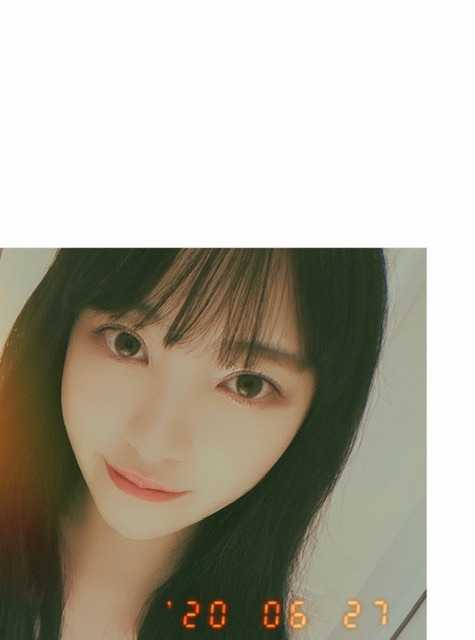
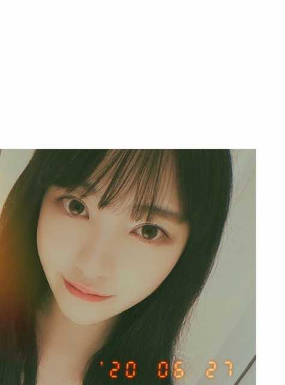

2020/0628Sun天気のはなし。
おはようございます
ホットギミックガールミーツボーイ
公開から1年が経ちました
改めて見返したのですが
劇中に挟まれる空や街や人の写真が
凄く印象的で、好きです
私も景色をちょこちょこ撮ったりしてるのですが
これからは頻繁に人や景色を
写真に残していこうかなあ
と思ってます
いろんなカメラをせっかく持っているので
生かさなきゃね、
瞬間を写真に残す意味って凄くあるなと思っていて
もちろん忘れたくない瞬間も
不意の何気ない瞬間も
必ず財産に、記憶に、思い出に繋がると思ってます
舞台挨拶などで
全国各地や上海に行ったのが
凄く懐かしく感じます
ライブや握手会で会う感覚とはまた違って
緊張とうれしさのドキドキが
あったなぁ...



きもちの、環境の、人、天気
雨 くもり 晴れ 雪
人間の生き方や気持ちって
天気以上に複雑だなって思う
毎日の変わりゆく天気に
驚いていられないなあ
ハワイくらいに安定した天気もいいなって思うけど
日本の、四季があって梅雨があって
頻繁に変わる天気も不安定で魅力的でわたしは好き
雨が降る日もあるし
泣きたい日だってある
でもいつかは必ず晴れます
今日も素敵な1日になりますように！
おはようございます
ホットギミックガールミーツボーイ
公開から1年が経ちました
改めて見返したのですが
劇中に挟まれる空や街や人の写真が
凄く印象的で、好きです
私も景色をちょこちょこ撮ったりしてるのですが
これからは頻繁に人や景色を
写真に残していこうかなあ
と思ってます
いろんなカメラをせっかく持っているので
生かさなきゃね、
瞬間を写真に残す意味って凄くあるなと思っていて
もちろん忘れたくない瞬間も
不意の何気ない瞬間も
必ず財産に、記憶に、思い出に繋がると思ってます
舞台挨拶などで
全国各地や上海に行ったのが
凄く懐かしく感じます
ライブや握手会で会う感覚とはまた違って
緊張とうれしさのドキドキが
あったなぁ...

きもちの、環境の、人、天気
雨 くもり 晴れ 雪
人間の生き方や気持ちって
天気以上に複雑だなって思う
毎日の変わりゆく天気に
驚いていられないなあ
ハワイくらいに安定した天気もいいなって思うけど
日本の、四季があって梅雨があって
頻繁に変わる天気も不安定で魅力的でわたしは好き
雨が降る日もあるし
泣きたい日だってある
でもいつかは必ず晴れます
今日も素敵な1日になりますように！
2020/06/28 10:30
コメント(274)
ブログ更新お疲れ様(o^∀^o)
コメント書くの忘れてた…………
みんな違ってみんないい(o^∀^o)
みてくれてるかなー？？
コメント遅くなってごめんね。
以後気をつけます(笑)
コメント書くの忘れてた…………
みんな違ってみんないい(o^∀^o)
みてくれてるかなー？？
コメント遅くなってごめんね。
以後気をつけます(笑)
ガルアワでの堀さん、カメラ目線も笑顔もキマッていました。目も瞳も大きくて、さすがモデルさん、カメラ映えして魅力的でした。存在感大きいですよね、堀さん、いつも。
近所に堀さんに似た美しい奥サマがいて、堀さんも年をとってもきれいでいるのだろうな、と勝手に思い込んでいます。堀さんの活躍をずっと見ていたいな。応援しています！
近所に堀さんに似た美しい奥サマがいて、堀さんも年をとってもきれいでいるのだろうな、と勝手に思い込んでいます。堀さんの活躍をずっと見ていたいな。応援しています！
お写真への意欲は元気な証拠、
と思います＾＾
と思います＾＾
未央奈ちゃん、おはよう。
私は私自身を追いかけます。
いい言葉ですよね。今までの言動を
見事に表しているものです。
目標に向かって努力を惜しまない姿勢に
憧れを感じる様になってました。
僕は夢に向かって行動を起こす事すら
出来なかった人なので。
やりたい事をやる人生ってとても難しい
ものです。周囲の冷やかな視線もあれば
自分自身がどこかで妥協して周囲に合わせて
平凡な生活を選択しがちです。
それも間違いではないかもしれないけど
つまらないですよね。自分の人生は自分で
責任を取ればいいのだから思いっきり
楽しんで欲しいと思ってます。
インスタのフォロワーが30万人突破した
のは当然の結果でしょう。あれほど努力
してきたのだから。おめでとう。
応援してきた僕としても喜ばしい事です。
今日の天気は雨。
感情で表現するなら嬉し涙です。
では。
私は私自身を追いかけます。
いい言葉ですよね。今までの言動を
見事に表しているものです。
目標に向かって努力を惜しまない姿勢に
憧れを感じる様になってました。
僕は夢に向かって行動を起こす事すら
出来なかった人なので。
やりたい事をやる人生ってとても難しい
ものです。周囲の冷やかな視線もあれば
自分自身がどこかで妥協して周囲に合わせて
平凡な生活を選択しがちです。
それも間違いではないかもしれないけど
つまらないですよね。自分の人生は自分で
責任を取ればいいのだから思いっきり
楽しんで欲しいと思ってます。
インスタのフォロワーが30万人突破した
のは当然の結果でしょう。あれほど努力
してきたのだから。おめでとう。
応援してきた僕としても喜ばしい事です。
今日の天気は雨。
感情で表現するなら嬉し涙です。
では。
めちゃ心に響きました！
ありがとうございます！
ありがとうございます！
のぎ動画入りました。
代々木の未央奈初登場画像
公開してくれないかな？
代々木の未央奈初登場画像
公開してくれないかな？
ブログ更新ありがとう
質問です！！
NiziU知ってますか？そして好きですか？ 採用されたら嬉しいです
これからも頑張ってください応援してます♥
質問です！！
NiziU知ってますか？そして好きですか？ 採用されたら嬉しいです
これからも頑張ってください応援してます♥
未央奈ちゃんありがとうございます！楽しみにしてます！頑張ります‼頑張って下さい！頑張ります‼気をつけて下さい！ありがとうございます！
ホットギミック、いい映画でした。2回見ました。未央奈さんの魅力爆発。
今日の写真も可愛い。悪戯っぽい笑顔がなんともたまらんです。
今日の写真も可愛い。悪戯っぽい笑顔がなんともたまらんです。
こんばんは、未央奈ちゃん。
ホットギミックガールミーツボーイ、観たいんだけど、まだ観れていなくて。笑笑
いつかちゃんと１つ残さずに大切に観させて頂きたいなあ～と思います。笑笑
少し前のブログで未央奈ちゃんが『荒野行動』をしていると聞いて、私も最初は興味無かったんだけど、嬉しくて始めちゃいました！笑笑
未央奈ちゃんと偶然戦いたくはないけど、出会えたら良いなあ～って思います！笑笑
いつも、『インフルエンサー』を聴きながら、ゲームしていて、今までは敵の攻撃が怖くて、隠れていただけだったけど、最近は未央奈ちゃんの『ここぞの度胸』を思い出して、見習わなくちゃ！って思って、自ら積極的に敵に立ち向かっていけたり、仲間が動けなかったら、危険を顧みず、行動出来たり出来るようになれてきたの！笑笑 このゲームとかでも度胸を鍛えたりしながら、やっぱり、『ここぞの度胸って本当に大切なんだなあ～！』って改めて実感しています！笑笑 未央奈ちゃんのお蔭ですね！本当にありがとうね～(*’ｰ’*)ﾉ
仲間の人だけじゃなくて、敵の人達も私は大切にしていきたいし、守っていきたいなあ。何故か強くはないけど、運に恵まれて、ベスト８とかトップ３位とかに入ってしまったんだけどね。笑笑
髪型、美容院でずっと未央奈ちゃんヘアーにしてきてたんだけど、たまには違う髪型にも挑戦してみようかな！って思ったんだけど、やっぱり内面は未央奈ちゃんみたいな女の子でありたいなあ。外見は変えても、内面はずっとずっと永遠に未央奈ちゃんから変えたくないって思ってて。外見よりももっと深く、人も恋も内面覗く事だから。
『写真を瞬間に残す意味って凄くあると思う。どんな瞬間でも、必ず財産に、記憶に、思い出に繋がると思っています。』
『人間の生き方や気持ちって天気以上に複雑だなって思う。』『安定した天気も良いけど、頻繁に変わる天気も不安定で魅力的で私は好き。』
『雨が降る日もあるし、泣きたい日だってある。でもいつかは必ず晴れます！』の未央奈ちゃんの全部の言葉に共感しちゃって。「そうだよね」って。
『私は未央奈ちゃんの事が本当に大好きで、未央奈ちゃんと出会えて、本当に良かったといつも思っています。いつも、『バレッタ』聴いているよ！『別れ際、もっと好きになる』も本当に全部大好き！未央奈ちゃんの事、これからもずっとずっと、大好き
お疲れ様～！モバメありがとうね！
今日はこないかなーって思ってたところに送ってくれるとは嬉しいよ(*^^*)
何か眠くてしょうがないときってあるよねー。
うとうとしてるときの意識を保つ大変さは何ともいえないものがあるよねw(゜ー゜)(。_。)
鍵泥棒のメソッド、堺雅人さんのやつか！
TELASAであったから見てみる！
そういえば、みんな755とかでもうコメントしてるけど、のぎおびでせーらが未央奈から貰った髪飾りつけててこっちまで嬉しくなったよ♪
乃木坂のメンバーの繋がりってやっぱ好きだなあって思いました(^^)
今日はこないかなーって思ってたところに送ってくれるとは嬉しいよ(*^^*)
何か眠くてしょうがないときってあるよねー。
うとうとしてるときの意識を保つ大変さは何ともいえないものがあるよねw(゜ー゜)(。_。)
鍵泥棒のメソッド、堺雅人さんのやつか！
TELASAであったから見てみる！
そういえば、みんな755とかでもうコメントしてるけど、のぎおびでせーらが未央奈から貰った髪飾りつけててこっちまで嬉しくなったよ♪
乃木坂のメンバーの繋がりってやっぱ好きだなあって思いました(^^)
眠くてうとうとしちゃうのは梅雨のせいかな？
雨ばっかで憂鬱になっちゃうね
雨ばっかで憂鬱になっちゃうね
お疲れ様です、堀さん。
そうですね、乃木坂工事中の3期生紹介企画、2017年ですね、その時初めて岩本さんを知ったのですけど、僕は岩本さんを初めて見た時ぐらいから、この先乃木坂46を中心となって支えていくのは岩本さんだろうなと確信に近いものを感じていますね！
まず、僕が初めて岩本さんを見た時、岩本さんは14歳だったのですけど、自分がその年齢ぐらいの頃とても、アイドルになろうとか、芸能活動しようとか一歩踏み出せるような勇気もなかったと思いますからね
岩本さんはもちろんかわいいですけど、それだけでなくて、ニコニコとしていて、堂々としていて、大物のように感じますね
そもそも乃木坂工事中の3期生紹介企画でも、松村さん、秋元さんという二人の軍団長に紹介されたのですからね
しかもその内の一人は今はキャプテンですね
そうですね、岩本さんの話をたくさんしましたけどね、僕も岩本さんに期待していますね！
またなにかお話したいことがあればコメントします。
健康にはお気をつけてお過ごしください！
そうですね、乃木坂工事中の3期生紹介企画、2017年ですね、その時初めて岩本さんを知ったのですけど、僕は岩本さんを初めて見た時ぐらいから、この先乃木坂46を中心となって支えていくのは岩本さんだろうなと確信に近いものを感じていますね！
まず、僕が初めて岩本さんを見た時、岩本さんは14歳だったのですけど、自分がその年齢ぐらいの頃とても、アイドルになろうとか、芸能活動しようとか一歩踏み出せるような勇気もなかったと思いますからね
岩本さんはもちろんかわいいですけど、それだけでなくて、ニコニコとしていて、堂々としていて、大物のように感じますね
そもそも乃木坂工事中の3期生紹介企画でも、松村さん、秋元さんという二人の軍団長に紹介されたのですからね
しかもその内の一人は今はキャプテンですね
そうですね、岩本さんの話をたくさんしましたけどね、僕も岩本さんに期待していますね！
またなにかお話したいことがあればコメントします。
健康にはお気をつけてお過ごしください！
未央奈～、こんばんわ 今日もモバメありがとう
今日もモバメありがとう 鍵使いのメソッド観た事あるよぉ
鍵使いのメソッド観た事あるよぉ DVD買ったよ堺さんのダメっぷりが面白いし、香川さんの完璧主義の几帳面なキャラが大好き。僕は香川さんのキャラに憧れ過ぎて、ズボラだった性格が几帳面になったよ！映画って凄いよね
DVD買ったよ堺さんのダメっぷりが面白いし、香川さんの完璧主義の几帳面なキャラが大好き。僕は香川さんのキャラに憧れ過ぎて、ズボラだった性格が几帳面になったよ！映画って凄いよね (笑)
(笑)
「いつかの待ち合わせ場所」37p～38p
このページの未央奈はホンマに大人っぽい表情だよねぇ～。ここの表情が、「君らしさ」の時には感じなかった大人の未央奈の魅力が出てるやんね ドキドキしました
ドキドキしました
未央奈大好きー
「いつかの待ち合わせ場所」37p～38p
このページの未央奈はホンマに大人っぽい表情だよねぇ～。ここの表情が、「君らしさ」の時には感じなかった大人の未央奈の魅力が出てるやんね
未央奈大好きー
お邪魔します
今ホットギミック見ました！
いや、原作も知らずに見たのでかなり内容に驚きましたよ
まずこの作品よくこの時間に収まったな？という事、ソフトな恋愛物かと思ったらなかなかにとんでもない作品でした
音楽、映像も素晴らしかったですが何よりヒロインの堀さんと兄役の間宮さんの演技は圧巻でした
ハマり役ってこういう時に使うんでしょうね〜
久しぶりに面白いと思った邦画見て少し興奮しちゃいました
これ以上はネタバレになりそうなのでこの辺で
まだまだ日常は元には戻りませんがどぞお身体にお気を付けてお過ごし下さい
今ホットギミック見ました！
いや、原作も知らずに見たのでかなり内容に驚きましたよ
まずこの作品よくこの時間に収まったな？という事、ソフトな恋愛物かと思ったらなかなかにとんでもない作品でした
音楽、映像も素晴らしかったですが何よりヒロインの堀さんと兄役の間宮さんの演技は圧巻でした
ハマり役ってこういう時に使うんでしょうね〜
久しぶりに面白いと思った邦画見て少し興奮しちゃいました
これ以上はネタバレになりそうなのでこの辺で
まだまだ日常は元には戻りませんがどぞお身体にお気を付けてお過ごし下さい
堀さん、こんばんは。
ショートは涼しげで良いですね。夏もショートも堀さんにはお似合いです。
ホットギミック見返しました。写真の出てくる姉妹のカラオケの場面は何度見ても良いですね。写真は残したい大事な美しい場面がたくさん在ったってことで、粗い一人称の映像はそれを自分で選べるようになったってことに思えました。
あと鍵泥棒のメソッドも見ましたよ。韓国版リメイク「LUCK-KEY」が有ると聞いて両方見ようと思ってたのを忘れてた所だったので思い出させてくれてありがとうございます。前見た時は話の面白さばかりに目が向いてたのですが、堀さんに薦められたら”人は過去に因らない好きな未来を選べる”ってテーマだったように思えてきました。
あとフォロワー30万人おめでとうございます。変顔も発表出来て良かったですね。変顔のパターンを増やす努力も欠かさない堀さんを尊敬します。
では、暑かったり涼しかったりで気付かないうちに疲れ溜まってることもあるかと思うので、たくさん眠って体調整えてくださいね。おやすみなさい。
ショートは涼しげで良いですね。夏もショートも堀さんにはお似合いです。
ホットギミック見返しました。写真の出てくる姉妹のカラオケの場面は何度見ても良いですね。写真は残したい大事な美しい場面がたくさん在ったってことで、粗い一人称の映像はそれを自分で選べるようになったってことに思えました。
あと鍵泥棒のメソッドも見ましたよ。韓国版リメイク「LUCK-KEY」が有ると聞いて両方見ようと思ってたのを忘れてた所だったので思い出させてくれてありがとうございます。前見た時は話の面白さばかりに目が向いてたのですが、堀さんに薦められたら”人は過去に因らない好きな未来を選べる”ってテーマだったように思えてきました。
あとフォロワー30万人おめでとうございます。変顔も発表出来て良かったですね。変顔のパターンを増やす努力も欠かさない堀さんを尊敬します。
では、暑かったり涼しかったりで気付かないうちに疲れ溜まってることもあるかと思うので、たくさん眠って体調整えてくださいね。おやすみなさい。
未央奈ちゃん、おはよう。
お疲れ様〜！と言われる事に慣れてなくて
免疫が無かったからとても嬉しかったです。
昨日は疲れも吹っ飛びましたね〜
なんて単純な人なんだろうか。
気を付けねば…
ゆっくりと咲く花。
とてもいい歌ですよね。かろうじて
覚えてました。自信は無かったけど皆さん
の反応を見て正解だと知りました。
一度しか披露されてないけど、花が
咲く振付が印象的でしたね。
あとで改めて歌詞を見て思い出した事も
あります。2期生をストレートに表現した
歌詞でありながら、自分に置き換える事が
出来るんですよね。誰が言ってる事なのかで
印象も変わります。
また披露してくれる事を願ってますが
聴きたくない自分も居ます。この歌は
完結したともとれる歌詞なので卒業して
しまうのではと不安になります。
いつかその日がきた時は涙が止まらなく
なるだろうなと思います。
では。
お疲れ様〜！と言われる事に慣れてなくて
免疫が無かったからとても嬉しかったです。
昨日は疲れも吹っ飛びましたね〜
なんて単純な人なんだろうか。
気を付けねば…
ゆっくりと咲く花。
とてもいい歌ですよね。かろうじて
覚えてました。自信は無かったけど皆さん
の反応を見て正解だと知りました。
一度しか披露されてないけど、花が
咲く振付が印象的でしたね。
あとで改めて歌詞を見て思い出した事も
あります。2期生をストレートに表現した
歌詞でありながら、自分に置き換える事が
出来るんですよね。誰が言ってる事なのかで
印象も変わります。
また披露してくれる事を願ってますが
聴きたくない自分も居ます。この歌は
完結したともとれる歌詞なので卒業して
しまうのではと不安になります。
いつかその日がきた時は涙が止まらなく
なるだろうなと思います。
では。
ブログ更新ありがとう
未央奈かわいい
未央奈かわいい
1年前にホットギミックを観たときの衝撃は今でも鮮明に覚えてます。堀ちゃんがあそこまで体当たりで演技してるのも、話が妙にリアルで心に何かぐさっと刺されたような感覚に陥りました。堀ちゃんの演技がすごく大好きだし、ホットギミックはすごく好きな映画です。
みおなちゃん更新ありがとう╰(*´︶`*)╯♡
ホットギミックガールミーツボーイ公開から1周年おめでとう！
いつまでも心に残り続ける素敵な作品です(*´꒳`*)
日本は四季があって良きですよね(๑>◡<๑)
感情があるから楽しくもありつらくもありますね、、
応援してます（╹◡╹）♡
ホットギミックガールミーツボーイ公開から1周年おめでとう！
いつまでも心に残り続ける素敵な作品です(*´꒳`*)
日本は四季があって良きですよね(๑>◡<๑)
感情があるから楽しくもありつらくもありますね、、
応援してます（╹◡╹）♡
こういう詩人みたいな言葉の綴り方好き！！天気の子見たくなるね☺︎
ももんが
ももんが
[天気のはなし。]ありがとー❗️
もう一年なんですね。思い出たくさん。
脳の記憶って印象的な出来事ばかりなんですけど、
フィルムの記録って何気ない事でも残ってるんですよね。
趣ありますねー。いとおかし。
最近は梅雨で気分までジメッとしてしまいますが、
未央奈のブログを見て、ゆずさんの「雨のち晴レルヤ」を聴いて
今年の梅雨を乗り越えます❗️
今日もエモい写真ありがとうございます。
次のブログ楽しみです❗️
もう一年なんですね。思い出たくさん。
脳の記憶って印象的な出来事ばかりなんですけど、
フィルムの記録って何気ない事でも残ってるんですよね。
趣ありますねー。いとおかし。
最近は梅雨で気分までジメッとしてしまいますが、
未央奈のブログを見て、ゆずさんの「雨のち晴レルヤ」を聴いて
今年の梅雨を乗り越えます❗️
今日もエモい写真ありがとうございます。
次のブログ楽しみです❗️
ハワイの天気はそこまで安定していないような気がする笑
常夏の島のイメージあるからかな。
雨降る時は激しいよね、スコールみたいな。
常夏の島のイメージあるからかな。
雨降る時は激しいよね、スコールみたいな。


今日はどんな一日やったんかな？楽しく過ごせた？僕は仕事で１日終わってしまって、今はいつかの待ち合わせ場所見てるよ
「いつかの待ち合わせ場所」35P～36P
もうこのページはドキドキだわぁ
でも一番伝えたい事は未央奈の背中のラインがめっちゃ綺麗だなぁ～
大好きやでぇ～